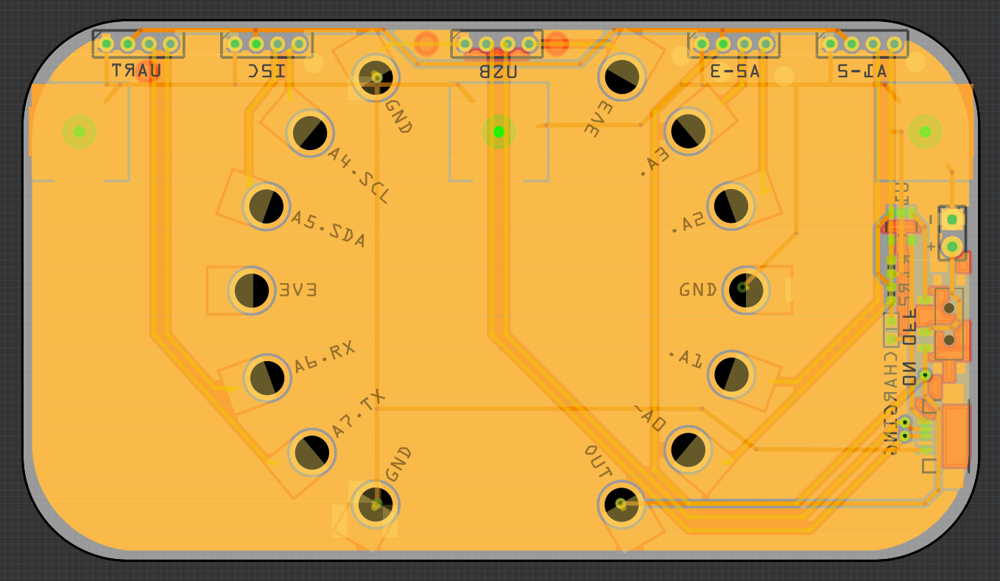

Not Dead Yet¶
Published on 2018-10-13 in Electronic Barrette Hub.
There has been no update for a long time here, and that’s because there hasn’t been much work. Why not? Because I was out of ideas. You see, I really want this to look good — to not be a horrible mess of tangled wires and electronic components, even though that is sometimes nice too, if you are into that kind of aesthetics. But that is surprisingly hard to do. And now, that the project has qualified to semifinals of the Hackaday Prize, there is even more pressure to get this right. I’ve been avoiding this project, focusing on my day job and other projects, because it was simply stressful.
But now that there is a little over one week left for the deadline, I remembered (again) that the secret to getting something right is not in getting it right at the first try, but in trying a lot of times and improving with every iteration. So yeah, the prototype doesn’t have to look good, even though I will make it with that goal in mind. I just need to get back to trying out things.
So I went and finished the PCB design. Based on the feedback from the non-smart barrette users, I went back to the same size and shape. I also decided to make it as flat as possible, and use a standard shaped LiPo battery after all (even though the round one arrived some time ago) — that will make the build easier to reproduce. So here is the carrier board:
There is a battery connector, power switch, charging electronics and USB port (for charging and for interfacing with the Video Pendant ). Instead of eight connector, each with one signal pin, I switched to four with two pins each — and they are arranged according to the Grove connector standard from Seeedstudio. Using standards where possible will make it more versatile in the future. Maybe I will even switch to the JST connectors, then it will be fully Grove-compatible.
I left the holes for the CPX, but I will probably cover them by soldering bolts onto them — so that the back is flat, because otherwise they would interfere with the hair clasp, and possibly also tangle into the hair.